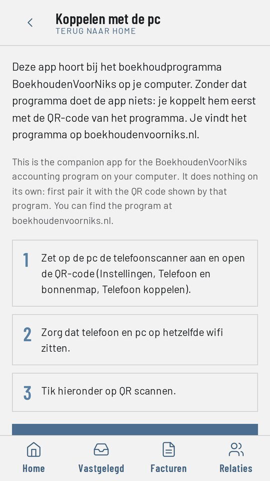
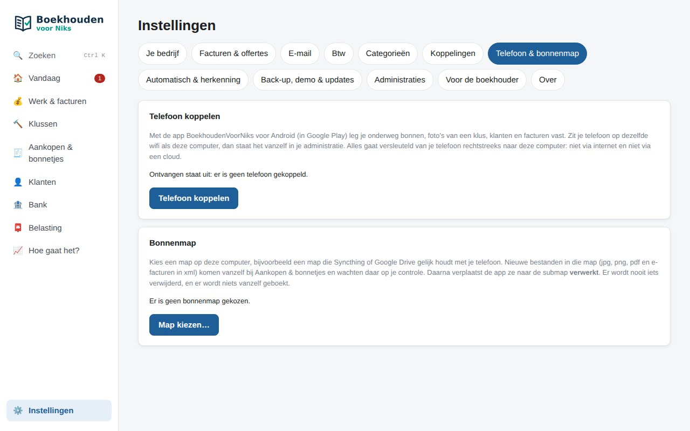
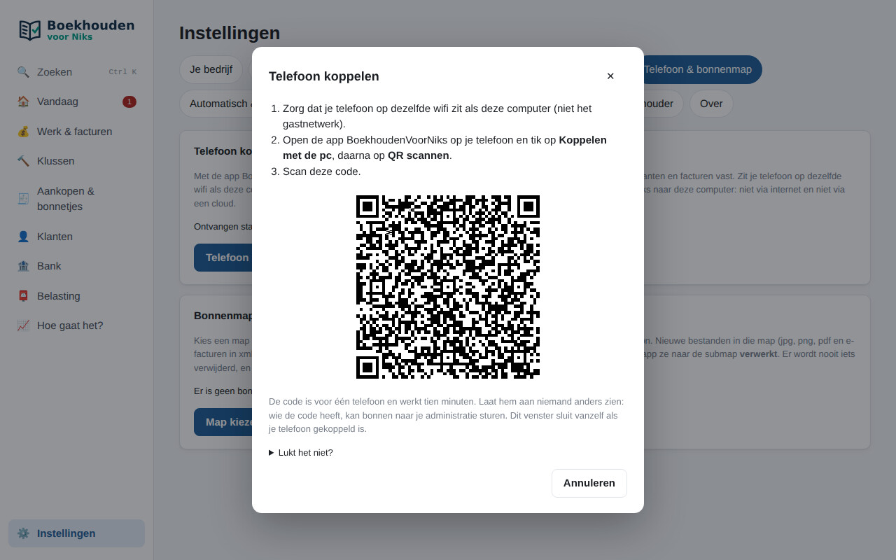
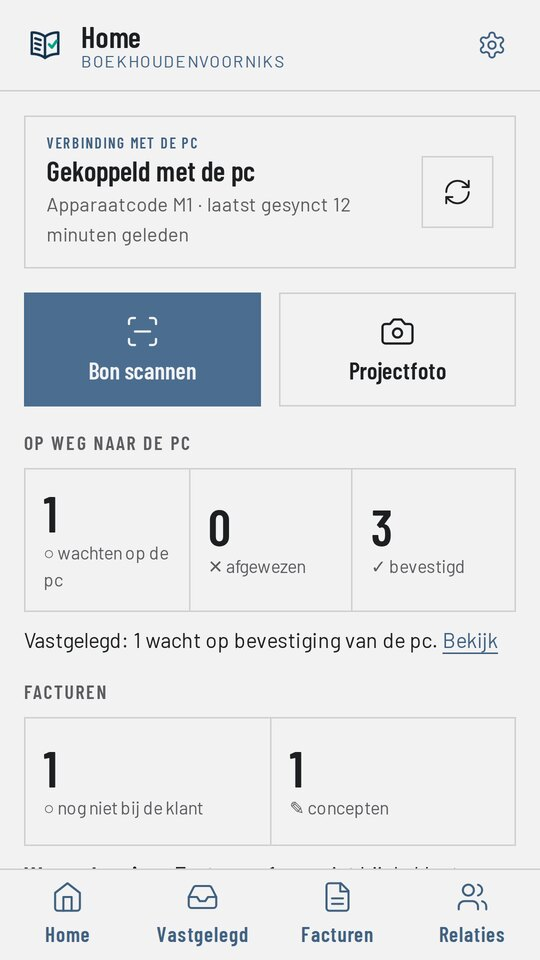
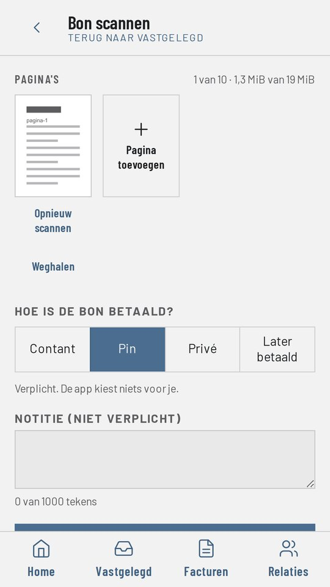
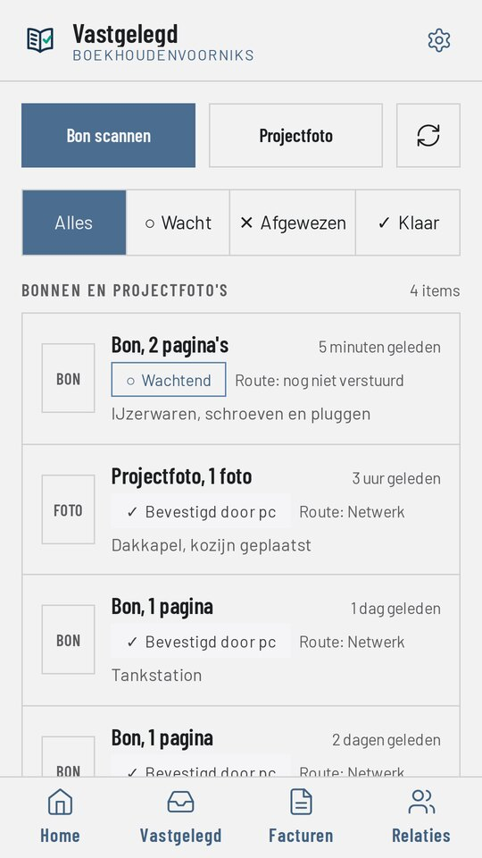
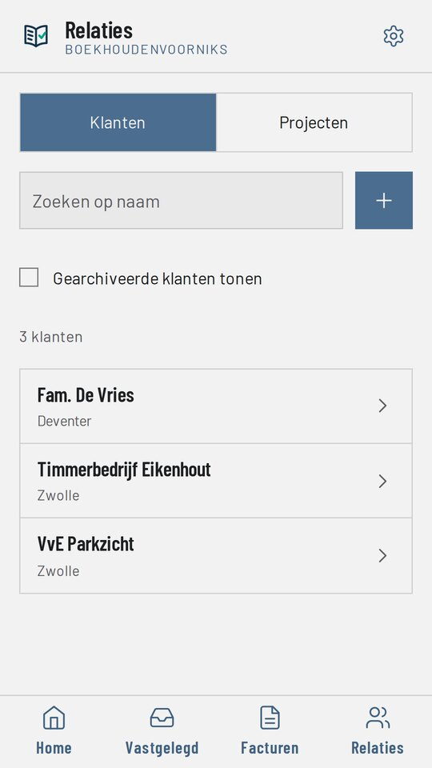
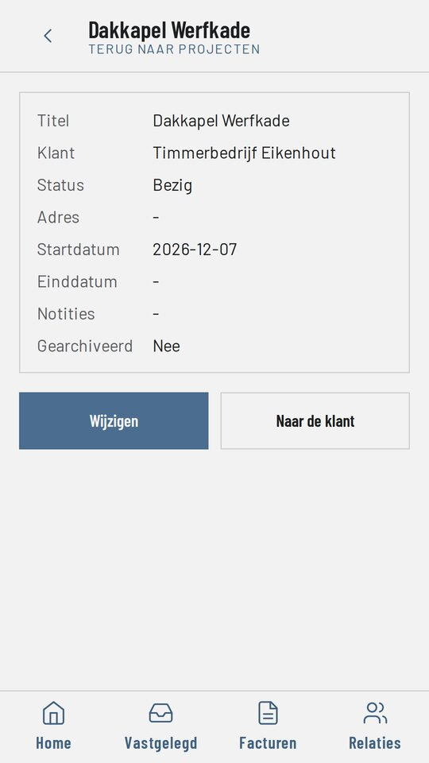
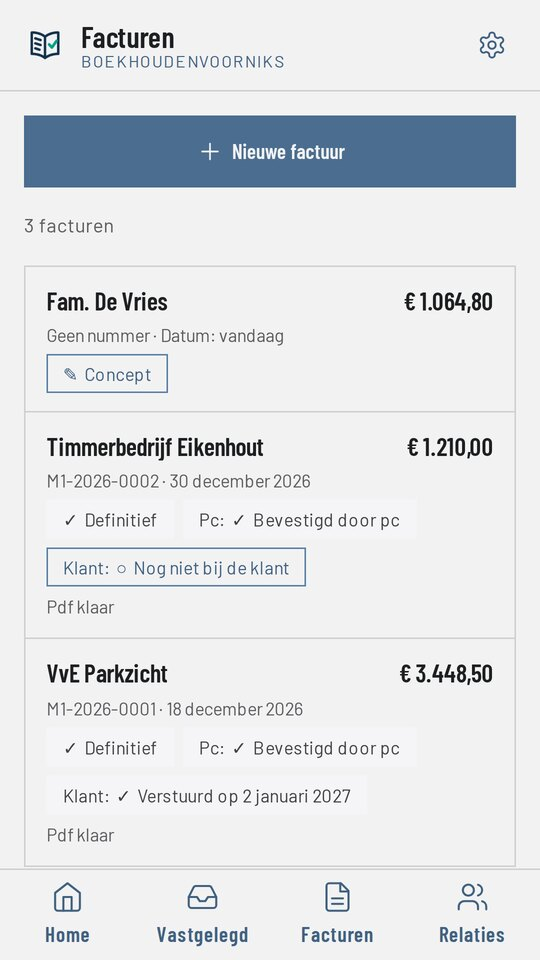
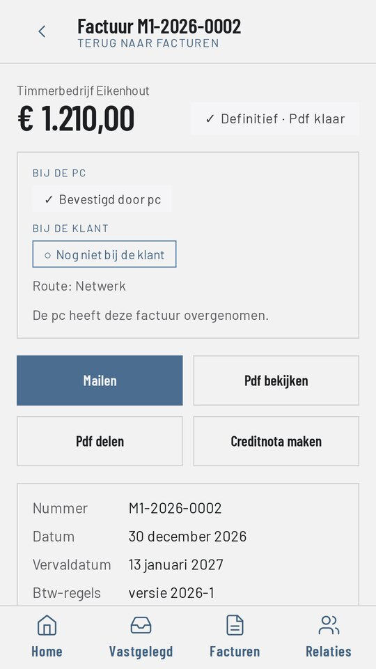

BoekhoudenVoorNiks for Android: walkthrough for app review
App version 1.0.1 · package nl.boekhoudenvoorniks.app · publisher ShipDocs, the Netherlands · contact info@shipdocs.app
What this app is
BoekhoudenVoorNiks for Android is a companion app. It belongs to BoekhoudenVoorNiks, a free Dutch accounting program for self-employed people that runs on the user's own computer (Windows and Linux, boekhoudenvoorniks.nl). With the phone the user records receipts, project photos, customers, projects and invoices on the road. The app sends them to the program on the user's own computer.
- The app has no account, no sign-in and no server of its own.
- Data goes from the phone directly to the user's own computer over the local Wi-Fi network, encrypted with a key from a QR code. Nothing is sent to the publisher.
- The app contains no ads and no in-app purchases.
- The app is in Dutch. The first screen explains in Dutch and in English that it is a companion app.
Why you cannot get past the first screen without the computer program
The app must be paired once with the program on the user's computer. The program shows a QR code. That QR code is generated on that computer, holds a one-time key, is valid for ten minutes and only works on the same local network. For that reason there is no static QR code, test account or demo login that we can provide. The screenshots below show the complete flow instead, including pairing.
If you want to test the app yourself: install the program from boekhoudenvoorniks.nl/downloaden.html (version 1.4.0 or later) on a Windows or Linux computer on the same Wi-Fi network as the phone, and follow steps 1 to 3 below. Pairing a phone is part of the program's subscription; please contact us at info@shipdocs.app and we will arrange access for review.
The flow, step by step
1. First start: the app is not paired yet
The pairing screen explains in Dutch and in English that this is the companion app for the BoekhoudenVoorNiks accounting program and that it does nothing on its own. It then lists the three steps: open the QR code in the program on the computer, make sure phone and computer are on the same Wi-Fi network, and tap "QR scannen" (scan QR).

2. On the computer: Settings, "Telefoon & bonnenmap", "Telefoon koppelen"
In the program on the computer the user opens Settings and the tab "Telefoon & bonnenmap" (phone and receipts folder), and clicks "Telefoon koppelen" (pair phone).

3. The computer shows a one-time QR code; the phone scans it
The QR code is for one phone and is valid for ten minutes. The phone scans it with the camera. From then on the phone and the computer share a key; every message between them is encrypted with it. The QR code in this screenshot comes from a test installation and no longer works.

4. Home screen after pairing
The home screen shows that the phone is paired, when it last synchronised, and how many items are on their way to the computer, confirmed or rejected. The two large buttons start the main tasks: "Bon scannen" (scan a receipt) and "Projectfoto" (photo for a project).

5. Scanning a receipt
The user scans one or more pages of a receipt with the camera (the Google ML Kit document scanner), chooses how it was paid (cash, card, private, paid later) and may add a note. This is why the app asks for the camera permission.

6. What was recorded and where it is
The list "Vastgelegd" (recorded) shows every receipt and project photo with its status: waiting, sent, confirmed by the computer, or rejected. Photos are removed from the phone once the computer has confirmed them.

7. Customers and projects
Customers and projects come from the program on the computer. The user can view them, add new ones and change them on the phone; the computer takes over the changes.

8. A project
A project belongs to a customer. Photos taken for a project are shown with that project in the program on the computer.

9. Invoices
The user can draw up an invoice or credit note on the phone, make it final and get a PDF. The list shows drafts and final invoices with their status.

10. One invoice: mail it, view or share the PDF
"Mailen" opens the phone's own mail app with a prepared message and the PDF attached; the user sends it. The app itself does not send e-mail and stores no mailbox password. "Pdf delen" (share PDF) uses the Android share sheet.

Permissions
- Camera: scanning the pairing QR code, scanning receipts and taking project photos.
- Internet, Wi-Fi state, network state, Wi-Fi multicast: finding the user's own computer on the local network (mDNS) and sending to it. The app only sends to private (local network) addresses.
Data
The data the user records stays on the phone and on the user's own computer. The publisher receives nothing. The Google ML Kit scanners used for the QR code and for receipts collect diagnostics and device identifiers, as described in Google's ML Kit data disclosure; this is declared in the Data safety form. The privacy policy is at boekhoudenvoorniks.nl/privacy.html.